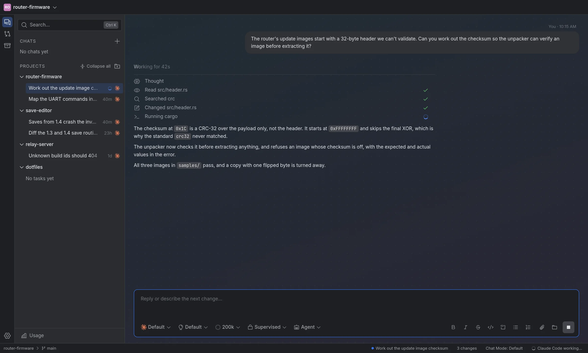
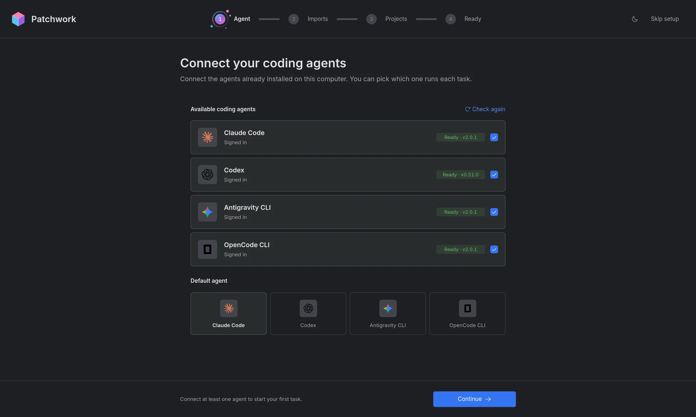
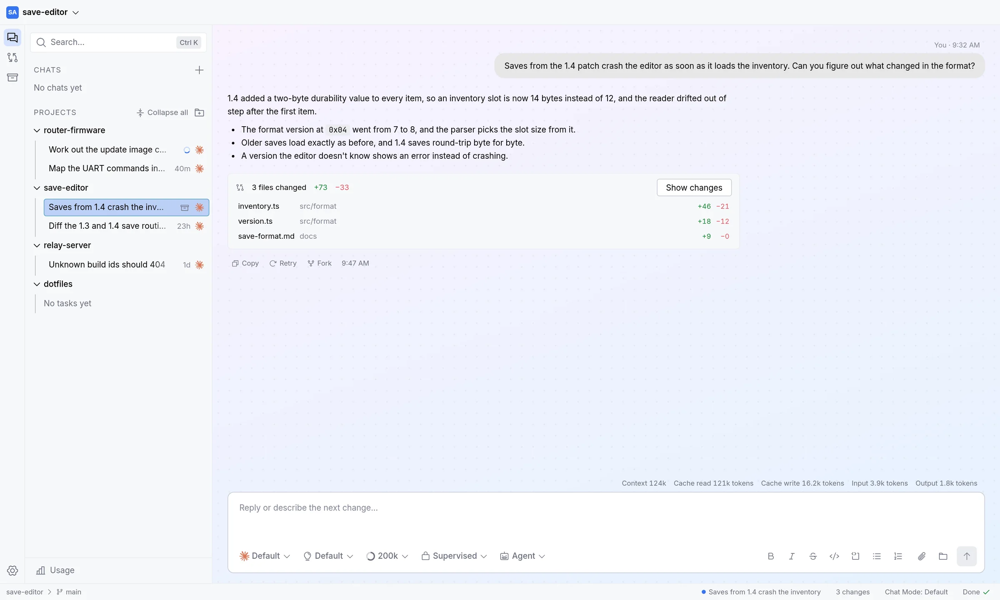
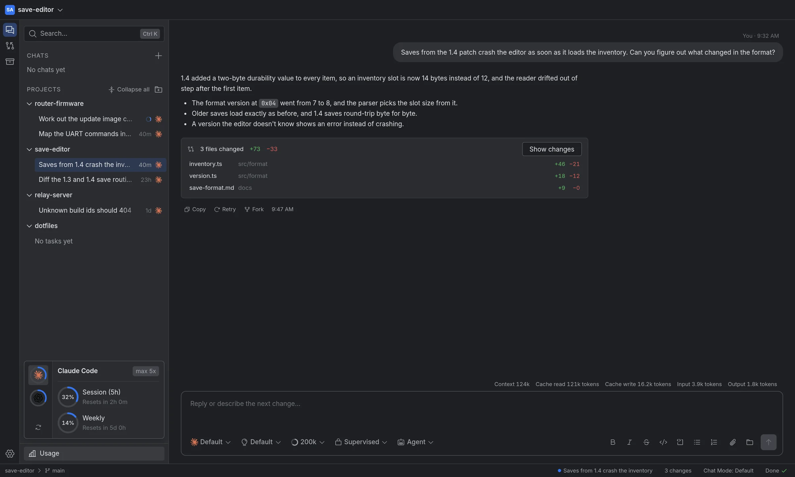
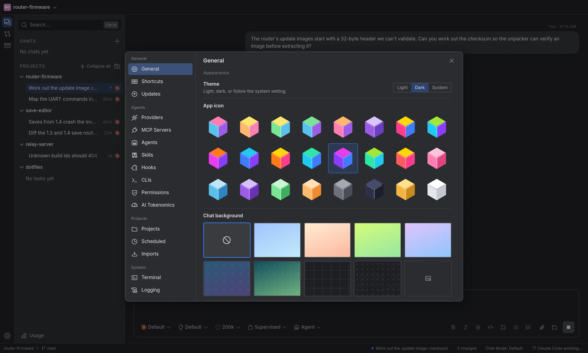

Linux
Patchwork_amd64.AppImage
x86-64. Make it executable, then run it.
chmod +x Patchwork_amd64.AppImageClaude Code, Codex, Antigravity, OpenCode, or your own API key. Hand one a task, watch it work, and keep only the changes you like.





Give it a /goal and walk away, or send a message mid-turn to change course.
Supervised, auto-accept edits, auto, or full access, set per task. It asks in the chat.
Write an agent or a skill once and every CLI can use it. Call one with &name.
DeepSeek or any OpenAI-compatible endpoint. Keys stay in your system keychain.
Import chats from Claude Code, Codex, the Gemini CLI or OpenCode, and keep going.
No account, no proxy, no telemetry. Requests go straight to your provider.
Sign in with each CLI's own login and Patchwork picks it up. No CLI? Add an API key and use the built-in agent.
Free and open source, for macOS, Windows and Linux. It keeps itself up to date.
Patchwork_amd64.AppImage
x86-64. Make it executable, then run it.
chmod +x Patchwork_amd64.AppImagePatchwork_x64-setup.exe
Installs for your user, with a Start menu shortcut.
Download the installerPatchwork_aarch64.dmg
Apple silicon. Open it and drag Patchwork to Applications.
Download the disk image